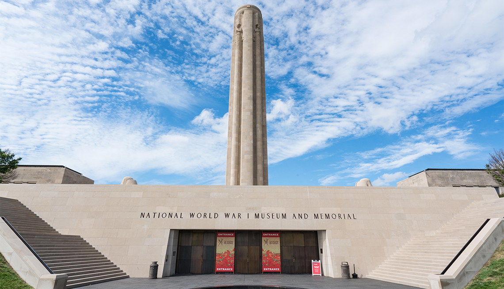
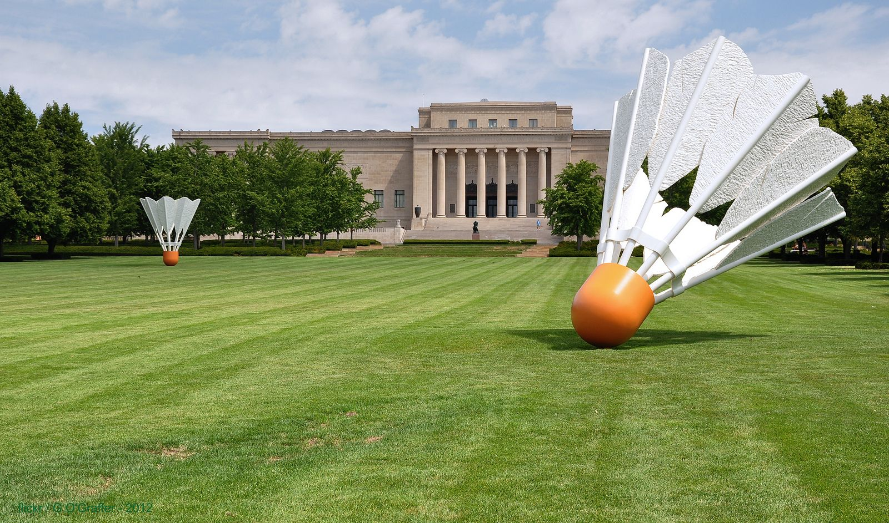
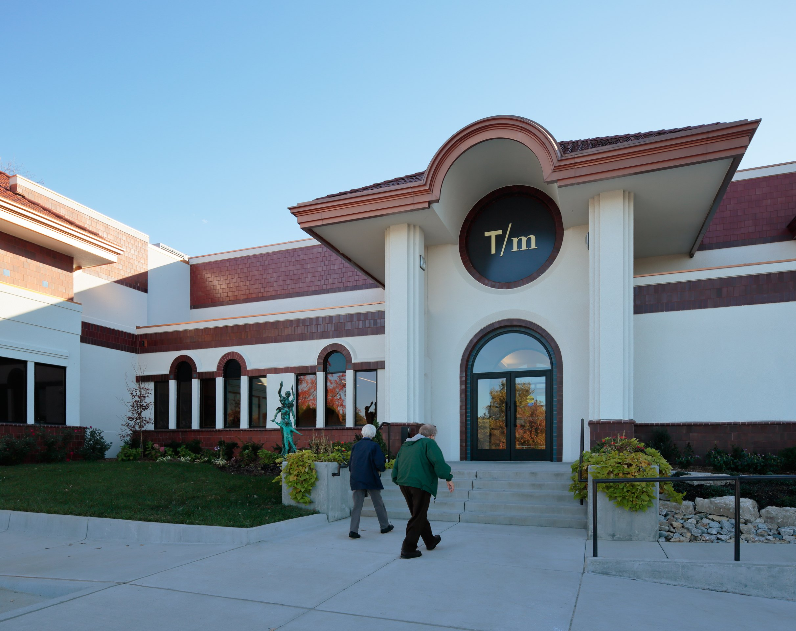

The National World War I Museum and Memorial was opened in 1926 as the Liberty Memorial. In 2004, it was designated by the United States Congress as the country's official war memorial and museum dedicated to World War I.
Address: 2 Memorial Dr, Kansas City, MO 64108
Price Range:
Adult $18.00,
Senior (Ages 65+) $14.00,
Youth (Ages 6 to 18) $10.00,
Children (Under 6) $0.00,
Military (Active Duty/Veteran) $14.00
Unique Feature: The only WW1 Museum in USA

National WWI Museum and Memorial, Kansas City
The Nelson-Atkins Museum of Art is an art museum in Kansas City, Missouri, known for its encyclopedic collection of art from nearly every continent and culture, and especially for its extensive collection of Asian art.
Address: 4525 Oak St, Kansas City, MO 64111
Price Range: free
Unique Feature: The collection of Asian art and collection of Chinese landscape paintings

The Nelson-Atkins Museum of Art, Kansas City.
Kansas City-style barbecue refers to the specific regional barbecue style of slowly smoked meat originating from Kansas City in the early 20th century. Henry Perry is credited as the originator of the style.
Address:5235 Oak St, Kansas City, MO 64112
Price Range:
Adult (Ages 18-64) $8
Age 65+: $7
Ages 6-17, Students: $5
Age 5 and Under: Free
Museums for All (With EBT Card): Free
UMKC Faculty, Staff, and Students:Free
Active Duty, Retired Military:Free
Unique Feature: World's largest collection of fine-scale miniatures

The National Museum of Toys and Miniatures, Kansas City